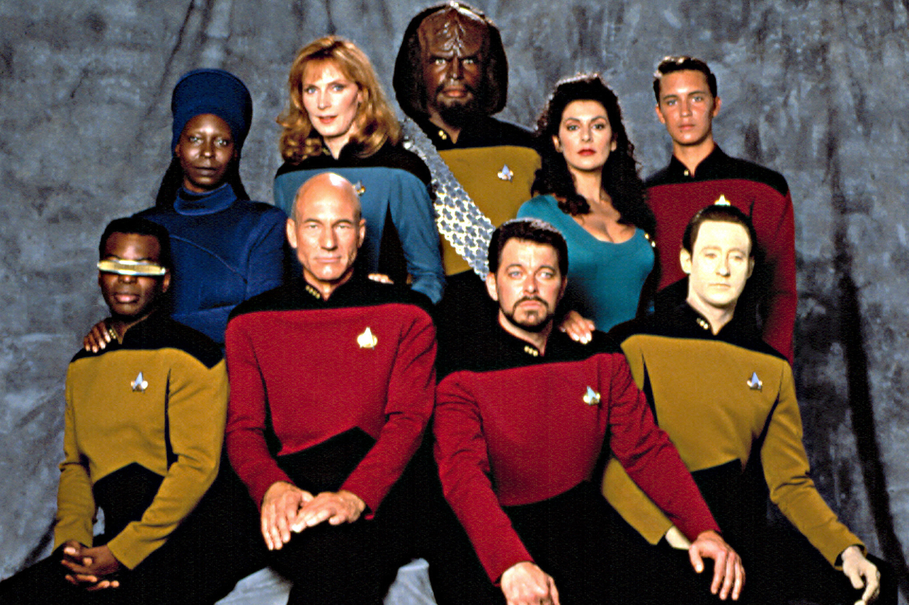

Duran Ünverdi
Hakkımızda
Düzce Üniversitesi Bilgisayar Mühendisliği Bölümü mezunuyum.İstanbulda yaşıyorum
İlgi Alanlarım
- Film
- Dizi
- How I Met Your Mother
- The Orijinals
- Kitap
Sevdiğim Diziler
Star Trek:The Next Generation

Uzay Yolu: Yeni Nesil Gene Roddenberry tarafından yaratılmış olan kurgusal Uzay Yolu evreninde geçen bir bilimkurgu dizisidir. Türkiye'de 1990-1997 yılları arasında Star TV'de yayınlanmıştır.